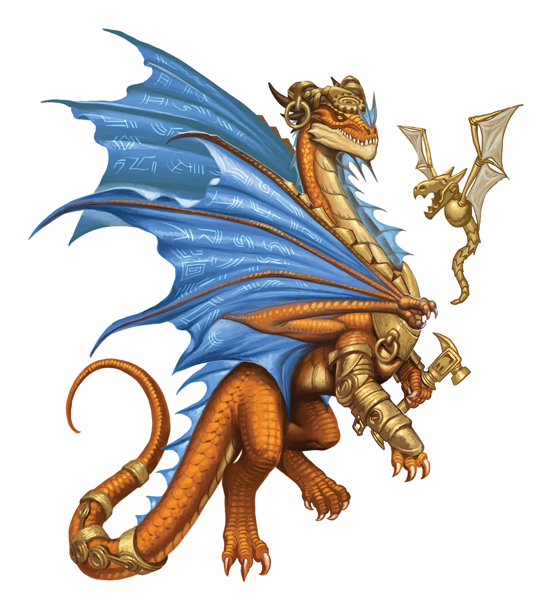

敕令龙社会
一只敕令龙的理想社会究竟是什么样的？如果我告诉你他们维护严格的等级制度和法治，你肯定不会感到惊讶。更令人惊讶的是，他们实际上并非都趋向于某种基于乌托邦社会结构的共同框架。事实证明，敕令龙具有创造性，他们都认为自己发明了一套统治体系，其优势甚至超过了乌托邦本身的永恒秩序。这有点过于傲慢了，但有些龙就是这样的。当然，我自己排除在外。我的成就是实实在在的。
敕令龙 Edict Dragon |
|
|
敕令龙律法是散布者，他们游历物质位面，寻找无法之地或执法腐败的社会。在那里，他们试图铲除腐败，建立运转的体制，以创造完美有序的社会。不幸的是，有时该地区的无法状态或社会中的腐败对于敕令龙来说过于深重而无法克服。在这种情况下，敕令龙的首选对策是通过建设基础设施和盟友关系来解决这些冲突，一步步接近他们的终极目标。然而，有时这些初步措施会遭遇失败，或者对秩序构成的威胁远比龙和任何潜在盟友都要强大，因此敕令龙必须采取更极端的措施。永恒之光仪式为敕令龙提供了一种方式，能在其自身身体、魔法和精神内部进行与通常通过建立盟友关系在外部进行的同类的渐进式进步。因此，当外部渐进主义不成功、前景不佳或单靠自身不足时，这是一个明智的选择。永恒敕令龙认为，这是所有敕令龙共有的辛勤劳作和逐步建设直至成功这一自然倾向的完美延伸。然而，传统派敕令龙常常认为这一选择过于激烈、仓促，甚至可能带来混乱，因为它不可逆转，并将永恒敕令龙与乌托邦的一些连接切断，而这些纽带将他们与纯粹秩序的生活联系在一起。永恒敕令龙乐于就此事进行激烈的辩论，他们指出，意志与决心比纯粹的宿命论更能带来对秩序的深刻尊重。一只永恒敕令龙与传统派敕令龙甚至可能寻求一位守序的凡人作为此类辩论的中立仲裁者。 永恒敕令龙积极寻求愿意协助他们实现为无法之地或腐败聚落带来秩序这一目标的盟友。这并不意味着他们所有的盟友都必须本身守序；任何真诚希望发展一个运作良好的完善社会的人都可以为敕令龙的梦想做出贡献。这通常始于小规模，例如一支冒险队伍在通过永恒之光仪式中的路径推进永恒敕令龙魔法的同时接受任务。另一方面，永恒敕令龙很少止步于此；他们经常与其他地方居民、组织、政府、商业团体、遥远盟友以及其他渴望为更美好生活而奋斗的人结盟。随着关系网和联盟的扩展，成功的机会以及永恒敕令龙的动力也随之增长。敕令龙喜欢深入思考其冒险队伍和更广泛联盟中可用的职业和技能类型，然后选择追求一个契合这部更大机器的职业，为团队的成功提供恰好所需的东西。如果放任自流，真正没有任何职位或角色来平衡队伍，他们通常会选择能让他们保护并带来秩序的职业，如圣武士，或精炼和改进事物的职业，如奇械师。 敕令龙社会 一只敕令龙的理想社会究竟是什么样的？如果我告诉你他们维护严格的等级制度和法治，你肯定不会感到惊讶。更令人惊讶的是，他们实际上并非都趋向于某种基于乌托邦社会结构的共同框架。事实证明，敕令龙具有创造性，他们都认为自己发明了一套统治体系，其优势甚至超过了乌托邦本身的永恒秩序。这有点过于傲慢了，但有些龙就是这样的。当然，我自己排除在外。我的成就是实实在在的。 敕令龙特质 Edict Dragon Traits 你出身于一脉严守秩序、以铲除腐败为己任的敕令龙世系。 |
 |